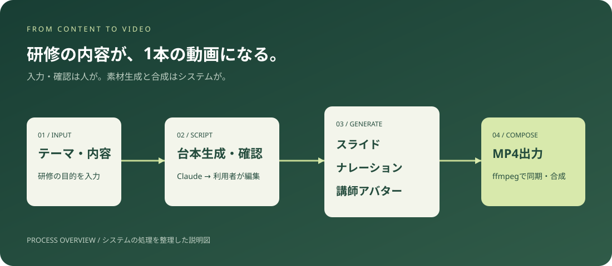
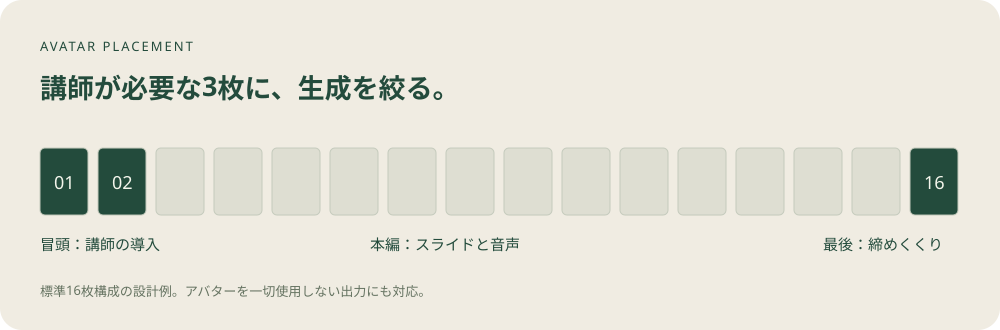
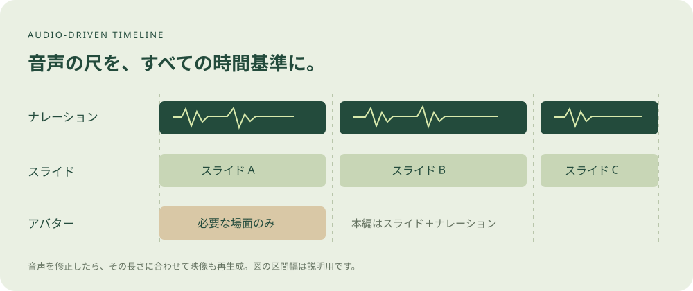

CASE STUDY / DEVELOPMENT
AI研修動画
自動生成システム
台本・スライド・ナレーション・講師アバターをつなぎ、
研修の内容を1本の動画へ。

要件整理・全実装・クラウド構築・本番運用
素材の生成と動画合成を一つの流れに
スライド・音声・講師アバターを統合
概要
研修のテーマと内容を入力すると、台本・スライド・ナレーション音声・講師アバター映像を自動生成し、1本の研修動画（MP4）として出力するWebシステムです。
従来、研修動画の制作には台本執筆、スライド作成、ナレーション録音、講師の撮影、動画編集という5つの工程が必要でした。本システムでは生成AI、スライド生成処理、動画処理エンジンを連携させ、人が担う作業を「内容の入力」と「生成物の確認・修正」に集約しています。
システム構成
| 役割 | 使用技術 |
|---|---|
| 操作画面 | Streamlit（Python 3.11） |
| 台本生成 | Claude API |
| スライド生成 | LibreOffice（ヘッドレス実行）＋ Noto Sans CJK |
| ナレーション音声合成 | ElevenLabs API |
| 講師アバター映像生成 | HeyGen API（デジタルツイン） |
| 動画合成 | ffmpeg |
| 実行環境 | Render（Docker／Debian、永続ディスク） |
処理パイプライン
- 内容入力
- 台本生成
- スライド生成
- 音声合成
- アバター生成
- 動画合成
- MP4出力
台本生成
Claude APIが「スライドごとの表示内容」と「スライドごとの読み上げ原稿」を対にした構造化台本を生成。利用者は画面上で確認・編集してから次工程へ進めます。
スライド生成
台本の表示内容からLibreOfficeでスライドを生成し、1枚ずつ画像化。表紙タイトルの自動改行、アジェンダ（本日の流れ）スライドの自動生成に対応しています。
音声合成
読み上げ原稿をElevenLabsでスライド単位のMP3に変換。各音声の尺がそのスライドの表示時間となり、動画全体のタイムラインを決定します。
アバター生成
クライアントの講師を元に作成したデジタルツインに、生成済み音声をリップシンクさせた映像をHeyGenで生成（1280×720）。背景はクロマキー用のグリーンバック（#00FF00）で出力します。
動画合成
ffmpegでスライド画像・音声・アバター映像を結合。アバターは緑色部分を透過処理してスライド上に重ね、1本のMP4として書き出します。
設計上の工夫
1. アバター生成を「講師が必要な場面」に限定
アバター生成は動画の尺に応じて費用がかかり、数分〜十数分の生成待ち時間も発生します。全スライドにアバターを出すと、コストと生成時間が膨らみます。
そこで標準の16枚構成では、冒頭2枚と最終1枚の計3枚に登場を限定。本編はスライドとナレーションのみで構成しました。受講者に「講師が語りかけている」印象を与える場面に絞り、アバター映像の生成量を抑えています。アバターを一切使わない出力にも対応しています。
開発時の説明資料では、HeyGenの利用条件を映像1秒あたり約1クレジットとして設計。現在の料金を示すものではありません。

2. 音声を基準にしたタイムライン設計
音声の尺を唯一の基準として、スライドの表示時間とアバター映像の長さをそこに従属させています。ナレーションの長さが変わっても映像側の手動調整が不要になり、台本修正から再生成までのサイクルを自動で回せます。

3. 長時間処理に耐えるジョブ設計
動画生成は複数の外部APIを呼び出すため、1本の生成に長時間を要します。ブラウザの操作や画面の再読み込みに生成処理の継続が左右されない構成が必要でした。
生成処理を画面から切り離した独立プロセスとして起動し、ジョブごとに作業ディレクトリ・状態ファイル・実行ログを永続ディスクに保存。利用者はブラウザを閉じても生成が継続し、後から結果を取得できます。障害時はジョブ単位のログから原因を特定できます。
4. 外部API呼び出しの堅牢化
- アップロード・生成リクエストは失敗時に最大2回の自動リトライ。待機時間を段階的に延長します。
- アバター生成は10秒間隔でポーリングし、30分でタイムアウトします。
- 複数スライドのアバター生成は、レート制限を考慮してリクエスト送信を直列化し、完了待ちのみを並列化して全体の待ち時間を短縮します。
5. 部分差し替えへの対応
スライドは「枠ごとの画像差し替え」方式を採用。特定のスライドだけを利用者が用意した画像に置き換えられます。ナレーションのタイミングと結びついた構造を壊さずに、柔軟な修正が可能です。
本番運用で解決した課題
音声とアバターの口の動きのズレ
合成後の動画で、アバターの口の動きと音声が徐々にずれる現象が発生。原因を調査したところ、ffmpegで音声の速度処理を行う過程でAACエンコード特有の無音パディングが挿入され、タイムラインが伸びていました。音声の再サンプリング処理（aresample=async=1）を組み込むことで解消し、最終出力を視聴して同期を確認しました。
クラウド環境でのメモリ不足によるプロセス停止
動画合成時の負荷によりプロセスが停止する障害に対し、実行環境の構成を見直し、安定稼働に移行しました。
日本語フォントの字形崩れ
スライド内の漢字が中国語の字形で表示される問題を、LibreOfficeの実行プロセスに限定して日本語ロケールを指定することで解消しました。
音声合成の読み落とし
隅付き括弧（【】）で囲まれた文字列が音声合成時にほぼ無音で扱われる挙動を特定し、台本処理側で対処しました。
導入による効果
撮影・録音・動画編集が不要に
デジタルツインの準備後は、動画ごとに講師の撮影日程を確保したり、ナレーション録音・動画編集を行ったりする工程を自動生成に置き換えました。
修正コストの低減
内容の一部変更は、台本やスライドの修正と再生成で完結。撮り直しは発生しません。
制作本数の拡大
1本あたりの人手を減らし、テーマ違いの研修動画を短期間で揃えられる制作体制を構築しました。
ブラウザのみで利用可能
ソフトウェアのインストールは不要。非エンジニアの担当者がブラウザから運用しています。
開発・運用の流れ
開発フェーズで本体を構築・納品した後、保守フェーズとして本番運用中の障害対応と、アジェンダスライド自動生成、表紙タイトル自動改行、アバター非表示オプションなどの機能追加を継続して担当しました。
本番環境での修正は利用者の稼働時間帯を避けて反映し、実際の出力動画を視聴・試聴して確認するまで完了としない運用を徹底しています。